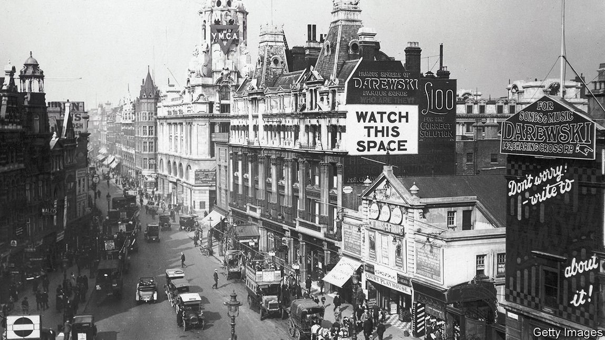
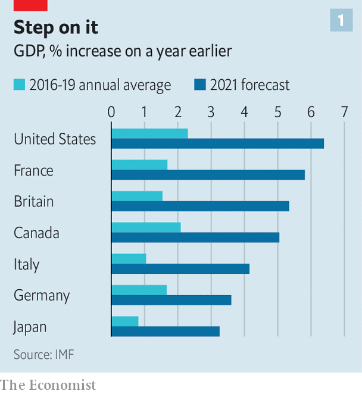
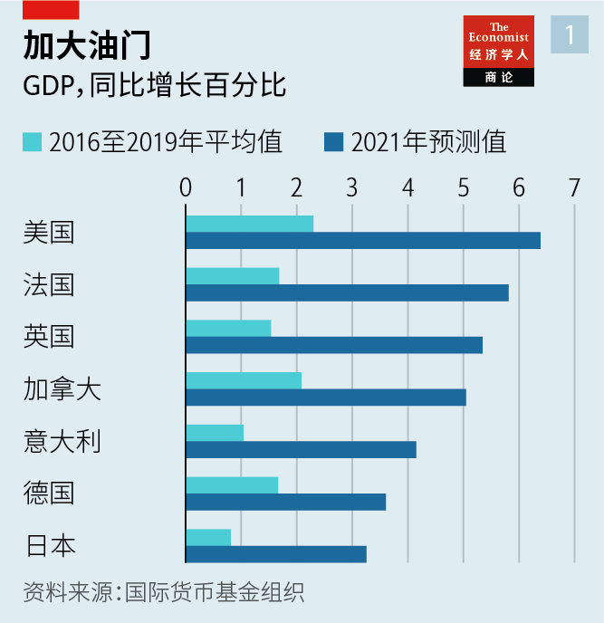
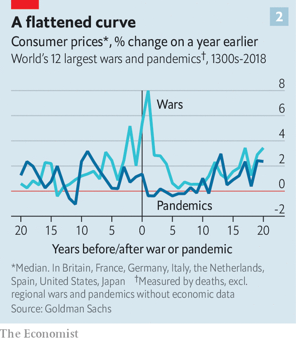
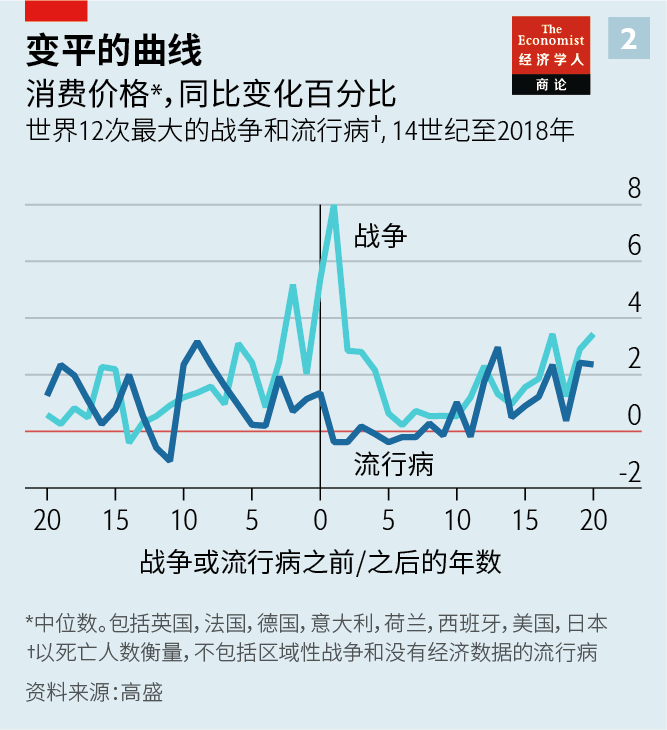

2021-05-31T14:17:24+00:00
Money, machines and mayhem
金钱、机器和骚乱
金錢、機器和騷亂
What history tells you about post-pandemic booms
以史为鉴，看疫情后的繁荣
以史為鑒，看疫情後的繁榮
People spend more, take more risks—and demand more of politicians
人们消费更多，冒更大风险——对政客的要求也更高
人們消費更多，冒更大風險——對政客的要求也更高
THE CHOLERA pandemic of the early 1830s hit France hard. It wiped out nearly 3% of Parisians in a month, and hospitals were overwhelmed by patients whose ailments doctors could not explain. The end of the plague prompted an economic revival, with France following Britain into an industrial revolution. But as anyone who has read “Les Misérables” knows, the pandemic also contributed to another sort of revolution. The city’s poor, hit hardest by the disease, fulminated against the rich, who had fled to their country homes to avoid contagion. France saw political instability for years afterwards.
十九世纪三十年代初的霍乱大流行重创了法国。一个月内就有将近3%的巴黎人丧生，医院里挤满了病人，而医生对他们的病痛束手无策。这场瘟疫的结束推动了一轮经济复苏，让法国跟随英国进入了工业革命。但读过《悲惨世界》的人都知道，这场瘟疫也带来了另一种革命。巴黎的穷人受疫情的打击最沉重，对那些逃到乡下别墅躲避瘟疫的富人怒火中烧。随后法国经历了多年的政局不稳。
十九世紀三十年代初的霍亂大流行重創了法國。一個月內就有將近3%的巴黎人喪生，醫院裡擠滿了病人，而醫生對他們的病痛束手無策。這場瘟疫的結束推動了一輪經濟復蘇，讓法國跟隨英國進入了工業革命。但讀過《悲慘世界》的人都知道，這場瘟疫也帶來了另一種革命。巴黎的窮人受疫情的打擊最沉重，對那些逃到鄉下別墅躲避瘟疫的富人怒火中燒。隨後法國經歷了多年的政局不穩。
Today, even as covid-19 rages across poorer countries, the rich world is on the verge of a post-pandemic boom. Governments are lifting stay-at-home orders as vaccinations reduce hospitalisations and deaths from the virus. Many forecasters reckon that America’s economy will grow by more than 6% this year, at least four percentage points faster than its pre-pandemic trend. Other countries are also in for unusually fast growth (see chart 1). The Economist’s analysis of GDP data for the G7 economies going back to 1820 suggests that such a synchronised acceleration relative to trend is rare. It has not happened since the post-war boom of the 1950s.
如今，当新冠肺炎仍在贫穷国家肆虐之时，发达国家已接近进入疫情后的繁荣期。随着疫苗接种减少了因感染新冠住院和死亡的人数，各国政府正逐步取消居家令。许多预测机构认为美国经济今年的增长率将超过6%，比疫情前的原有趋势至少高出四个百分点。其他国家也即将迎来非同寻常的快速增长（见图表1）。本刊对七国集团（G7）自1820年以来的GDP数据的分析表明，像这样多国相比原有趋势同步加速的情况很罕见。自上世纪50年代的战后经济繁荣以来还未曾发生过。
如今，當新冠肺炎仍在貧窮國家肆虐之時，發達國家已接近進入疫情後的繁榮期。隨着疫苗接種減少了因感染新冠住院和死亡的人數，各國政府正逐步取消居家令。許多預測機構認為美國經濟今年的增長率將超過6%，比疫情前的原有趨勢至少高出四個百分點。其他國家也即將迎來非同尋常的快速增長（見圖表1）。本刊對七國集團（G7）自1820年以來的GDP數據的分析表明，像這樣多國相比原有趨勢同步加速的情況很罕見。自上世紀50年代的戰後經濟繁榮以來還未曾發生過。
The situation is so unfamiliar that economists are turning to history for a sense of what to expect. The record suggests that, after periods of massive non-financial disruption such as wars and pandemics, GDP does bounce back. It offers three further lessons. First, while people are keen to go out and spend, uncertainty lingers. Second, crises encourage people and businesses to try new ways of doing things, upending the structure of the economy. Third, as “Les Misérables” shows, political upheaval often follows, with unpredictable economic consequences.
情形如此陌生，经济学家需要回顾历史才能预期未来。记录显示，在经历了战争和流行病等大规模非金融动荡之后，GDP确实会反弹。此外还有三条经验。首先，虽然人们对外出消费热情高涨，但不确定性挥之不去。其次，危机鼓励人们和企业尝试新的做事方法，从而颠覆经济结构。第三，正如《悲惨世界》所展示的，政治动荡往往随之而来，带来不可预测的经济后果。
情形如此陌生，經濟學家需要回顧歷史才能預期未來。記錄顯示，在經歷了戰爭和流行病等大規模非金融動蕩之後，GDP確實會反彈。此外還有三條經驗。首先，雖然人們對外出消費熱情高漲，但不確定性揮之不去。其次，危機鼓勵人們和企業嘗試新的做事方法，從而顛覆經濟結構。第三，正如《悲慘世界》所展示的，政治動蕩往往隨之而來，帶來不可預測的經濟後果。
Take consumer spending first. Evidence from earlier pandemics suggests that during the acute phase people behave as they have during the past year of covid-19, accumulating savings as spending opportunities vanish. In the first half of the 1870s, during an outbreak of smallpox, Britain’s household-saving rate doubled. Japan’s saving rate more than doubled during the first world war. In 1919-20, as the Spanish flu raged, Americans stashed away more cash than in any subsequent year until the second world war. When that war hit, savings rose again, with households accumulating additional balances in 1941-45 worth some 40% of GDP.
先说消费者支出。以往流行病的证据表明，与过去一年新冠疫情期间的情况一样，在疾病爆发期人们没有机会消费，积攒下了储蓄。18世纪70年代上半叶天花爆发期间，英国家庭的储蓄率翻了一番。日本的储蓄率在一战期间翻了一番多。1919至1920年西班牙流感肆虐，美国人存下的现金比这之后到二战之间的任何一年都多。到二战来临时，储蓄率再次攀升，1941至1945年家庭新积累的存款余额达到GDP的约40%。
先說消費者支出。以往流行病的證據表明，與過去一年新冠疫情期間的情況一樣，在疾病爆發期人們沒有機會消費，積攢下了儲蓄。18世紀70年代上半葉天花爆發期間，英國家庭的儲蓄率翻了一番。日本的儲蓄率在一戰期間翻了一番多。1919至1920年西班牙流感肆虐，美國人存下的現金比這之後到二戰之間的任何一年都多。到二戰來臨時，儲蓄率再次攀升，1941至1945年家庭新積累的存款餘額達到GDP的約40%。
History also offers a guide to what people do once life gets back to normal. Spending rises, prompting employment to recover, but there is not much evidence of excess. The notion that people celebrated the end of the Black Death by “wild fornication” and “hysterical gaiety”, as some historians suppose, is (probably) apocryphal. The 1920s were far from roaring, at least at first. On New Year’s Eve 1920, after the threat of Spanish flu had decisively passed, “Broadway and Times Square looked more like the old days”, according to one study, but America nonetheless felt like “a sick and tired nation”. A recent paper by Goldman Sachs, a bank, estimates that in 1946-49 American consumers spent only about 20% of their excess savings. That extra spending certainly aided the post-war boom, though the government’s monthly “business situation” reports in the late 1940s were nonetheless filled with worry of an impending slowdown (and indeed the economy went into recession in 1948-49). Beer consumption actually fell. Consumers’ caution may be one reason why there is little evidence of pandemic-induced surges in inflation (see chart 2).
当生活恢复正常后人们会怎么做，历史也给出了提示。支出会增加，促进就业复苏，但没有太多证据显示人们会无节制地消费。一些历史学家猜想，在黑死病结束后，人们用“疯狂私通”和“歇斯底里的狂欢”来大肆庆祝，但这种说法（很可能）只是传说，不足为信。上世纪20年代远远谈不上“咆哮”，至少在初期不是。据一项研究称，1920年新年前夜，西班牙流感的威胁彻底过去后，“百老汇和时代广场恢复了往日模样”，但感觉上美国仍是一个“病怏怏的国家”。高盛最近的一篇文章估计，从1946到1949年，美国消费者只花掉了他们过剩储蓄的20%左右。这些额外支出确实促进了战后的繁荣，但40年代末美国政府每月的“商业形势”报告仍然充满对经济放缓的担忧（而经济确实在1948到1949年陷入了衰退）。啤酒消费量实际上减少了。没有什么证据表明流行病会引发通胀激增，消费者的谨慎心态可能是原因之一（见图表2）。
當生活恢復正常後人們會怎麼做，歷史也給出了提示。支出會增加，促進就業復蘇，但沒有太多證據顯示人們會無節制地消費。一些歷史學家猜想，在黑死病結束後，人們用“瘋狂私通”和“歇斯底里的狂歡”來大肆慶祝，但這種說法（很可能）只是傳說，不足為信。上世紀20年代遠遠談不上“咆哮”，至少在初期不是。據一項研究稱，1920年新年前夜，西班牙流感的威脅徹底過去後，“百老匯和時代廣場恢復了往日模樣”，但感覺上美國仍是一個“病怏怏的國家”。高盛最近的一篇文章估計，從1946到1949年，美國消費者只花掉了他們過剩儲蓄的20%左右。這些額外支出確實促進了戰後的繁榮，但40年代末美國政府每月的“商業形勢”報告仍然充滿對經濟放緩的擔憂（而經濟確實在1948到1949年陷入了衰退）。啤酒消費量實際上減少了。沒有什麼證據表明流行病會引發通脹激增，消費者的謹慎心態可能是原因之一（見圖表2）。
The second big lesson from post-pandemic booms relates to the “supply side” of the economy—how and where goods and services are produced. Though, in aggregate, people appear to be less keen on frivolity following a pandemic, some may be more willing to try new ways of making money. Historians believe the Black Death made Europeans more adventurous. Piling on to a ship and setting sail for new lands seemed less risky when so many people were dying at home. “Apollo’s Arrow”, a recent book by Nicholas Christakis of Yale University, shows that the Spanish flu pandemic gave way to “increased expressions of risk-taking”. Indeed a study for America’s National Bureau of Economic Research, published in 1948, found that the number of startups boomed from 1919. Today new business formation is once again surging across the rich world, as entrepreneurs seek to fill gaps in the market.
疫情后繁荣的第二个重要经验与经济的“供给侧”有关，即商品和服务在哪里生产、如何生产。尽管总体而言人们在疫情之后似乎不太喜欢轻率行事，但一些人更愿意尝试新的赚钱方式。历史学家认为黑死病增强了欧洲人的冒险精神。大批人在家垂死之际，登船起航寻找新大陆似乎也没那么危险了。耶鲁大学的尼古拉斯·克里斯塔基斯（Nicholas Christakis）的新书《阿波罗之箭》（Apollo’s Arrow）显示，西班牙流感过后出现了“更多的冒险行为”。事实上，1948年发表的一项为美国国家经济研究局（National Bureau of Economic Research）所做的研究发现，从1919年开始创业公司数量激增。今天，随着企业家寻求填补市场空白，发达国家再次出现了创办新企业的热潮。
疫情後繁榮的第二個重要經驗與經濟的“供給側”有關，即商品和服務在哪裡生產、如何生產。儘管總體而言人們在疫情之後似乎不太喜歡輕率行事，但一些人更願意嘗試新的賺錢方式。歷史學家認為黑死病增強了歐洲人的冒險精神。大批人在家垂死之際，登船起航尋找新大陸似乎也沒那麼危險了。耶魯大學的尼古拉斯·克里斯塔基斯（Nicholas Christakis）的新書《阿波羅之箭》（Apollo’s Arrow）顯示，西班牙流感過後出現了“更多的冒險行為”。事實上，1948年發表的一項為美國國家經濟研究局（National Bureau of Economic Research）所做的研究發現，從1919年開始創業公司數量激增。今天，隨着企業家尋求填補市場空白，發達國家再次出現了創辦新企業的熱潮。
Other economists have drawn a link between pandemics and another change to the supply side of the economy: the use of labour-saving technology. Bosses may want to limit the spread of disease, and robots do not fall ill. A paper by researchers at the IMF looks at a number of recent outbreaks of diseases, including Ebola and SARS, and finds that “pandemic events accelerate robot adoption, especially when the health impact is severe and is associated with a significant economic downturn.” The 1920s were also an era of rapid automation in America, especially in telephone operation, one of the most common jobs for young American women in the early 1900s. Others have drawn a link between the Black Death and Johannes Gutenberg’s printing press. There is as yet little hard evidence of a surge in automation because of covid-19, though anecdotes abound.
其他经济学家指出在流行病和经济供给侧的另一项变化——采用节省劳动力的技术——之间存在关联。企业老板可能想要限制疾病传播，而机器人不会生病。国际货币基金组织（IMF）的研究人员的一篇论文分析了近些年爆发的一系列疾病，包括埃博拉病毒和SARS，发现“流行病加速了机器人的应用，尤其是在疾病严重损害健康且与严重经济衰退相关时”。上世纪20年代也是美国快速自动化的时代，特别是在电话接线部门，这是上世纪初美国年轻女性最常见的工作之一。还有一些研究人员将黑死病和约翰内斯·古腾堡（Johannes Gutenberg）的印刷机联系起来。目前尽管传言很多，但尚没有确凿证据表明新冠疫情导致了自动化水平大幅上升。
其他經濟學家指出在流行病和經濟供給側的另一項變化——採用節省勞動力的技術——之間存在關聯。企業老闆可能想要限制疾病傳播，而機器人不會生病。國際貨幣基金組織（IMF）的研究人員的一篇論文分析了近些年爆發的一系列疾病，包括埃博拉病毒和SARS，發現“流行病加速了機器人的應用，尤其是在疾病嚴重損害健康且與嚴重經濟衰退相關時”。上世紀20年代也是美國快速自動化的時代，特別是在電話接線部門，這是上世紀初美國年輕女性最常見的工作之一。還有一些研究人員將黑死病和約翰內斯·古騰堡（Johannes Gutenberg）的印刷機聯繫起來。目前儘管傳言很多，但尚沒有確鑿證據表明新冠疫情導致了自動化水平大幅上升。
Whether automation deprives people of jobs, however, is another matter. Some research suggests that workers in fact do better in the aftermath of pandemics. A paper published last year by the Federal Reserve Bank of San Francisco finds that real wages tend to rise. In some cases this is through a macabre mechanism: the disease culls workers, leaving survivors in a stronger bargaining position.
不过，自动化是否会夺走人们的工作机会又是另一回事了。一些研究表明，工人在流行病之后的待遇实际上更好了。旧金山联储去年发表的一篇文章发现实际工资趋于上涨。在某些情况下，这背后的逻辑令人毛骨悚然：疾病让大量工人丧命，使幸存者在谈判中处于更有利的地位。
不過，自動化是否會奪走人們的工作機會又是另一回事了。一些研究表明，工人在流行病之後的待遇實際上更好了。舊金山聯儲去年發表的一篇文章發現實際工資趨於上漲。在某些情況下，這背後的邏輯令人毛骨悚然：疾病讓大量工人喪命，使倖存者在談判中處於更有利的地位。
In other cases, however, rising wages are the product of political changes—the third big lesson of historical booms. When people have suffered in large numbers, attitudes may shift towards workers. That seems to be happening this time: policymakers across the world are less interested in reducing public debt or warding off inflation than they are in getting unemployment down. A new paper from three academics at the London School of Economics also finds that covid-19 has made people across Europe more averse to inequality.
然而，在其他情况下，工资上涨是政治变革的产物——这是过往繁荣的第三大经验。当大批民众遭受苦难时，对工人的态度会改善。这一次似乎也是如此：比起减少公共债务或防止通货膨胀，世界各地的政策制定者对降低失业率更感兴趣。伦敦政治经济学院的三名学者发表的一篇新论文也发现，新冠疫情让欧洲人更加厌恶不平等。
然而，在其他情況下，工資上漲是政治變革的產物——這是過往繁榮的第三大經驗。當大批民眾遭受苦難時，對工人的態度會改善。這一次似乎也是如此：比起減少公共債務或防止通貨膨脹，世界各地的政策制定者對降低失業率更感興趣。倫敦政治經濟學院的三名學者發表的一篇新論文也發現，新冠疫情讓歐洲人更加厭惡不平等。
Such pressures have, in some instances, exploded into political disorder. Pandemics expose and accentuate pre-existing inequalities, leading those on the wrong side of the bargain to look for redress. Ebola, in 2013-16, increased civil violence in West Africa by 40%, according to one study. Recent research from the IMF considers the effect of five pandemics, including Ebola, SARS and Zika, in 133 countries since 2001. It finds that they led to a significant increase in social unrest. “It is reasonable to expect that, as the pandemic fades, unrest may re-emerge in locations where it previously existed,” researchers write in another IMF paper. Social unrest seems to peak two years after the pandemic ends. Enjoy the coming boom while it lasts. Before long, there may be a twist in the tale. ■
在某些情况下，这种压力爆发为政治混乱。流行病暴露并加剧了业已存在的不平等，使处于弱势一方的人寻求纠正它。一项研究显示，2013到2016年，埃博拉使西非国家的国内暴力增加了40%。IMF最近研究了自2001年以来埃博拉、非典和寨卡病毒等五种流行病在133个国家的影响，结果发现它们导致社会动荡显著增加。“有理由认为，随着疫情消退，之前出现过动荡的地区可能会重现不安局面。”IMF研究人员在另一篇文章中写道。社会动荡看似会在此次疫情结束两年后达到顶峰。尽情享受即将到来的繁荣吧，不久之后情况恐怕就会有变。
在某些情況下，這種壓力爆發為政治混亂。流行病暴露並加劇了業已存在的不平等，使處於弱勢一方的人尋求糾正它。一項研究顯示，2013到2016年，埃博拉使西非國家的國內暴力增加了40%。IMF最近研究了自2001年以來埃博拉、非典和寨卡病毒等五種流行病在133個國家的影響，結果發現它們導致社會動蕩顯著增加。“有理由認為，隨着疫情消退，之前出現過動蕩的地區可能會重現不安局面。”IMF研究人員在另一篇文章中寫道。社會動蕩看似會在此次疫情結束兩年後達到頂峰。盡情享受即將到來的繁榮吧，不久之後情況恐怕就會有變。